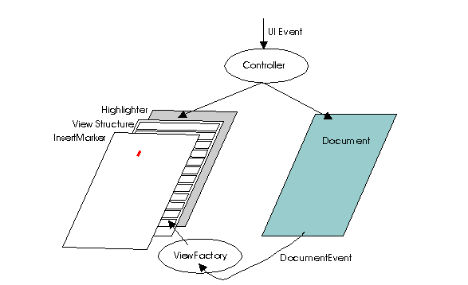

java.awt.Component
java.awt.Container
javax.swing.JComponent
javax.swing.text.JTextComponent
java.awt.Component
java.awt.Container
javax.swing.JComponent
javax.swing.text.JTextComponent
|
JavaTM 2 Platform Standard Ed. 6 |
|||||||||
| 上一个类 下一个类 | 框架 无框架 | |||||||||
| 摘要： 嵌套 | 字段 | 构造方法 | 方法 | 详细信息： 字段 | 构造方法 | 方法 | |||||||||
java.lang.Object
public abstract class JTextComponent
JTextComponent 是 swing 文本组件的基类。它会试着与 java.awt.TextComponent 类兼容，并且在此理应如此。还提供其他额外灵活性（不包括可插入 UI 和 bean 支持）服务。有关如何使用此类提供的功能的信息，请参阅 The Java Tutorial 中的 General Rules for Using Text Components 一节。
CaretListener 接口的实现。如果尚未设置定制插入符，则该 UI 将安装默认插入符。DefaultCaret 尝试使自己可见，这将导致 JScrollPane 内的文本组件发生滚动。DefaultCaret.setUpdatePolicy(int) 方法可以更改默认的插入符行为。
Action 接口使用 TextAction 实现来表示。文本组件支持的命令集合可以使用 getActions() 方法查找。这些操作可以绑定到由按键等触发的键事件上。
Keymap 让应用程序将击键绑定到操作上。为了允许 keymap 在整个多文本组件上共享，它们可以使用扩展 TextAction 的操作。TextAction 可以确定哪个 JTextComponent 最近有或以前有过焦点，并因此成为该操作的执行者（在此情况下，发送到该操作的 ActionEvent 不包含作为其源的目标文本组件）。
input method framework 让文本组件与输入法交互，分隔预处理事件的软件组件，来让用户使用非常有限的几个键盘键输入成千上万个不同的字符。JTextComponent 是该框架的一个活动客户端，因此它可实现与输入法交互的首选用户界面。因此，有些键事件因为受输入法处理而无法到达文本组件，而有些文本输入不是作为键事件而是作为在 InputMethodEvent 内的提交文本到达文本组件的。完整的文本输入是 keyTyped 键事件中的字符和输入法事件中的提交文本的结合。
AWT 侦听器模型让应用程序将事件侦听器附加到组件，以便将事件绑定到操作。Swing 鼓励使用 keymap 替代侦听器，但要通过使用它为侦听器提供获得事件的机会来维护与侦听器的兼容性。
键盘事件和输入法事件通过以下几个阶段进行处理，每个阶段都能使用该事件：
Stage |
KeyEvent |
InputMethodEvent |
|---|---|---|
| 1. | 输入法 | （在此处生成） |
| 2. | 焦点管理器 | |
| 3. | 注册的键侦听器 | 注册的输入法侦听器 |
| 4. | 在 JTextComponent 中的输入法处理 | |
| 5. | 使用当前 keymap 进行 keymap 处理 | |
| 6. | 在 JComponent 中进行键盘处理（如加速键、组件导航等） | |
要维护与侦听键事件但不知道输入法事件的应用程序的兼容性，在阶段 4 中的输入法处理会提供不处理输入法事件的组件的兼容性模式。对于这些组件，可将提交文本转换为 keyTyped 键事件，并在阶段 3 开始的键事件管线中进行处理，而不是在输入法事件管线中处理。
默认情况下，组件将创建一个作为默认 keymap 由所有 JTextComponent 实例共享的 keymap（名为 DEFAULT_KEYMAP）。通常，外观实现将安装一个不同的 keymap，以便把另一个 keymap 中找不到的绑定解析为默认 keymap。该绑定最少包括：

该模型由 Document 接口定义。此模型应提供灵活的文本存储机制，以在编辑过程中跟踪更改，并且可以扩展为更复杂的模型。该模型接口旨在捕获 SGML（用于表示多种内容的系统）提供的表达式功能。每次修改文档都会以 DocumentEvent 形式将更改的详细信息通知给所有观察者，允许视图与模型保持最新。将此事件发送给实现了 DocumentListener 接口且注册为需要正在接受观察的模型的观察者。
modelToView(int) 和 viewToModel(java.awt.Point)。
UndoableEdit 记录以提供撤消/恢复支持。该支持由 Document 模型提供，该模型允许用户附加 UndoableEditListener 实现。
AbstractDocument 的文档会描述提供的假定保护。异步调用的安全方法标记为注释。
print 方法进行基本文档打印。如果需要更高级的打印，请使用 getPrintable(java.text.MessageFormat, java.text.MessageFormat) 方法。
警告：此类的已序列化对象与以后的 Swing 版本不兼容。当前序列化支持适用于短期存储，或适用于在运行相同 Swing 版本的应用程序之间进行 RMI（Remote Method Invocation，远程方法调用）。从 1.4 版本开始，已在 java.beans 包中添加了支持所有 JavaBeansTM 长期存储的功能。请参见 XMLEncoder。
Document,
DocumentEvent,
DocumentListener,
Caret,
CaretEvent,
CaretListener,
TextUI,
View,
ViewFactory| 嵌套类摘要 | |
|---|---|
class |
JTextComponent.AccessibleJTextComponent
此类实现 JTextComponent 类的可访问性支持。 |
static class |
JTextComponent.DropLocation
表示 JTextComponent 的放置位置 (drop location)。 |
static class |
JTextComponent.KeyBinding
用于创建键绑定的绑定记录。 |
| 从类 javax.swing.JComponent 继承的嵌套类/接口 |
|---|
JComponent.AccessibleJComponent |
| 从类 java.awt.Container 继承的嵌套类/接口 |
|---|
Container.AccessibleAWTContainer |
| 从类 java.awt.Component 继承的嵌套类/接口 |
|---|
Component.AccessibleAWTComponent, Component.BaselineResizeBehavior, Component.BltBufferStrategy, Component.FlipBufferStrategy |
| 字段摘要 | |
|---|---|
static String |
DEFAULT_KEYMAP
将由所有 JTextComponent 实例共享的默认 keymap，除非这些实例已有另一个 keymap 集合。 |
static String |
FOCUS_ACCELERATOR_KEY
焦点加速键的绑定 (bound) 属性名称。 |
| 从类 javax.swing.JComponent 继承的字段 |
|---|
accessibleContext, listenerList, TOOL_TIP_TEXT_KEY, ui, UNDEFINED_CONDITION, WHEN_ANCESTOR_OF_FOCUSED_COMPONENT, WHEN_FOCUSED, WHEN_IN_FOCUSED_WINDOW |
| 从类 java.awt.Component 继承的字段 |
|---|
BOTTOM_ALIGNMENT, CENTER_ALIGNMENT, LEFT_ALIGNMENT, RIGHT_ALIGNMENT, TOP_ALIGNMENT |
| 从接口 java.awt.image.ImageObserver 继承的字段 |
|---|
ABORT, ALLBITS, ERROR, FRAMEBITS, HEIGHT, PROPERTIES, SOMEBITS, WIDTH |
| 构造方法摘要 | |
|---|---|
JTextComponent()
创建一个新的 JTextComponent。 |
|
| 方法摘要 | |
|---|---|
void |
addCaretListener(CaretListener listener)
添加插入符侦听器，以便侦听任何插入符的更改通知。 |
void |
addInputMethodListener(InputMethodListener l)
添加指定的输入方法侦听器，以接收发自此组件的输入方法事件。 |
static Keymap |
addKeymap(String nm,
Keymap parent)
将一个新 keymap 添加到 keymap 层次结构。 |
void |
copy()
将关联文本模型中当前选定的范围传输到系统剪贴板，并在文本模型中保留内容。 |
void |
cut()
将关联文本模型中当前选定的范围传输到系统剪贴板，并从模型中移除内容。 |
protected void |
fireCaretUpdate(CaretEvent e)
通知所有已注册需要此事件类型的通知的侦听器。 |
AccessibleContext |
getAccessibleContext()
获取与此 JTextComponent 关联的 AccessibleContext。 |
Action[] |
getActions()
获取编辑器的命令列表。 |
Caret |
getCaret()
获取允许在视图上进行面向文本导航的插入符。 |
Color |
getCaretColor()
获取用于呈现插入符的当前颜色。 |
CaretListener[] |
getCaretListeners()
返回在此文本组件上已注册的所有插入符侦听器的数组。 |
int |
getCaretPosition()
返回文本组件的文本插入符的位置。 |
Color |
getDisabledTextColor()
获取用于呈现禁用文本的当前颜色。 |
Document |
getDocument()
获取与编辑器关联的模型。 |
boolean |
getDragEnabled()
返回是否启用自动拖动处理。 |
JTextComponent.DropLocation |
getDropLocation()
返回在组件上进行 DnD 操作过程中此组件在视觉上指示为放置位置的位置；如果当前没有显示任何位置，则返回 null。 |
DropMode |
getDropMode()
返回此组件的放置模式。 |
char |
getFocusAccelerator()
返回将导致接收文本组件获取焦点的加速键。 |
Highlighter |
getHighlighter()
获取负责进行高亮显示的对象。 |
InputMethodRequests |
getInputMethodRequests()
获取输入方法请求处理程序，该处理程序支持此组件输入方法发出的请求。 |
Keymap |
getKeymap()
获取当前在此文本组件中活动的 keymap。 |
static Keymap |
getKeymap(String nm)
获取以前添加到文档中的已命名 keymap。 |
Insets |
getMargin()
返回文本组件的边框和它的文本之间的空白。 |
NavigationFilter |
getNavigationFilter()
返回 NavigationFilter。 |
Dimension |
getPreferredScrollableViewportSize()
返回视图组件视口的首选大小。 |
Printable |
getPrintable(MessageFormat headerFormat,
MessageFormat footerFormat)
返回一个 Printable，用于打印此 JTextComponent 的内容。 |
int |
getScrollableBlockIncrement(Rectangle visibleRect,
int orientation,
int direction)
显示逻辑行或列的组件应计算滚动增量，它将根据方向的值完全公开一个行块或列块。 |
boolean |
getScrollableTracksViewportHeight()
如果视口总是强制此 Scrollable 的高度与视口高度匹配，则返回 true。 |
boolean |
getScrollableTracksViewportWidth()
如果视口总是强制此 Scrollable 的宽度与视口宽度匹配，则返回 true。 |
int |
getScrollableUnitIncrement(Rectangle visibleRect,
int orientation,
int direction)
显示逻辑行或列的组件应计算滚动增量，它将根据方向的值完全公开一个新的行或列。 |
String |
getSelectedText()
返回此 TextComponent 中包含的选定文本。 |
Color |
getSelectedTextColor()
获取用于呈现选定文本的当前颜色。 |
Color |
getSelectionColor()
获取用于呈现选定的当前颜色。 |
int |
getSelectionEnd()
返回选定文本的结束位置。 |
int |
getSelectionStart()
返回选定文本的起始位置。 |
String |
getText()
返回此 TextComponent 中包含的文本。 |
String |
getText(int offs,
int len)
获取由组件表示的文本部分。 |
String |
getToolTipText(MouseEvent event)
返回用作 event 的工具提示的字符串。 |
TextUI |
getUI()
获取此面向文本的编辑器的用户界面工厂。 |
boolean |
isEditable()
返回指示此 TextComponent 是否可编辑的 boolean。 |
static void |
loadKeymap(Keymap map,
JTextComponent.KeyBinding[] bindings,
Action[] actions)
加载带有一组绑定的 keymap。 |
Rectangle |
modelToView(int pos)
将模型中给定位置转换为视图坐标系统中的位置。 |
void |
moveCaretPosition(int pos)
将插入符移动到新的位置，同时保留最后一次调用 setCaretPosition 之前定义的标记。 |
protected String |
paramString()
返回此 JTextComponent 的字符串表示形式。 |
void |
paste()
将系统剪贴板的内容传输到关联的文本模型中。 |
boolean |
print()
一个便捷打印方法，它显示打印对话框，然后在交互 模式下打印此 JTextComponent，不打印标题和脚注文本。 |
boolean |
print(MessageFormat headerFormat,
MessageFormat footerFormat)
一个便捷打印方法，它显示打印对话框，然后在交互 模式下打印此 JTextComponent，打印指定的标题和脚注文本。 |
boolean |
print(MessageFormat headerFormat,
MessageFormat footerFormat,
boolean showPrintDialog,
PrintService service,
PrintRequestAttributeSet attributes,
boolean interactive)
打印此 JTextComponent 的内容。 |
protected void |
processInputMethodEvent(InputMethodEvent e)
处理组件上发生的输入方法事件，方法是将其指派到任意已注册的 InputMethodListener 对象。 |
void |
read(Reader in,
Object desc)
根据流进行初始化。 |
void |
removeCaretListener(CaretListener listener)
移除插入符侦听器。 |
static Keymap |
removeKeymap(String nm)
移除以前添加到文档中的已命名 keymap。 |
void |
removeNotify()
通知此组件它不再有父组件。 |
void |
replaceSelection(String content)
用给定字符串所表示的新内容替换当前选定的内容。 |
void |
select(int selectionStart,
int selectionEnd)
选定指定的开始和结束位置之间的文本。 |
void |
selectAll()
选择 TextComponent 中的所有文本。 |
void |
setCaret(Caret c)
设置要使用的插入符。 |
void |
setCaretColor(Color c)
设置用于呈现插入符的当前颜色。 |
void |
setCaretPosition(int position)
设置 TextComponent 的文本插入符的位置。 |
void |
setComponentOrientation(ComponentOrientation o)
设置语言敏感的方向，用于排序此组件内的元素或文本。 |
void |
setDisabledTextColor(Color c)
设置用于呈现禁用文本的当前颜色。 |
void |
setDocument(Document doc)
将编辑器与文本文档关联。 |
void |
setDragEnabled(boolean b)
开启或关闭自动拖动处理。 |
void |
setDropMode(DropMode dropMode)
设置此组件的放置模式，为了向后兼容性，此属性的默认值为 DropMode.USE_SELECTION。 |
void |
setEditable(boolean b)
设置指定的 boolean 变量，以指示此 TextComponent 是否应该为可编辑的。 |
void |
setFocusAccelerator(char aKey)
设置将导致接收的文本组件获取焦点的加速键。 |
void |
setHighlighter(Highlighter h)
设置要使用的 highlighter。 |
void |
setKeymap(Keymap map)
设置用于将事件绑定到操作的 keymap。 |
void |
setMargin(Insets m)
设置组件的边框和它的文本之间的空白。 |
void |
setNavigationFilter(NavigationFilter filter)
设置 NavigationFilter。 |
void |
setSelectedTextColor(Color c)
设置用于呈现选定文本的当前颜色。 |
void |
setSelectionColor(Color c)
设置用于呈现选定的当前颜色。 |
void |
setSelectionEnd(int selectionEnd)
将选择结束点设置为指定的位置。 |
void |
setSelectionStart(int selectionStart)
将选定起始点设置为指定的位置。 |
void |
setText(String t)
将此 TextComponent 文本设置为指定文本。 |
void |
setUI(TextUI ui)
设置此面向文本的编辑器的用户界面工厂。 |
void |
updateUI()
重新加载可插入的 UI。 |
int |
viewToModel(Point pt)
将视图坐标系统中的给定位置转换为模型中最具代表性的位置。 |
void |
write(Writer out)
将模型的内容存储到给定的流中。 |
| 从类 java.lang.Object 继承的方法 |
|---|
clone, equals, finalize, getClass, hashCode, notify, notifyAll, wait, wait, wait |
| 字段详细信息 |
|---|
public static final String FOCUS_ACCELERATOR_KEY
public static final String DEFAULT_KEYMAP
JTextComponent 实例共享的默认 keymap，除非这些实例已有另一个 keymap 集合。
| 构造方法详细信息 |
|---|
public JTextComponent()
JTextComponent。建立插入符事件的侦听器，并安装可插入的 UI。将组件标记为可编辑状态。不使用任何布局管理器，因为布局受文本的视图子系统管理。文档模型被设置为 null。
| 方法详细信息 |
|---|
public TextUI getUI()
public void setUI(TextUI ui)
ui - 工厂public void updateUI()
getUIClassID()。该 UI 的类型是 TextUI。设置该 UI 之后调用 invalidate。
JComponent 中的 updateUIJComponent.setUI(javax.swing.plaf.ComponentUI),
UIManager.getLookAndFeel(),
UIManager.getUI(javax.swing.JComponent)public void addCaretListener(CaretListener listener)
listener - 要添加的侦听器CaretEventpublic void removeCaretListener(CaretListener listener)
listener - 要移除的侦听器CaretEventpublic CaretListener[] getCaretListeners()
CaretListener；如果当前没有注册任何插入符侦听器，则返回一个空数组addCaretListener(javax.swing.event.CaretListener),
removeCaretListener(javax.swing.event.CaretListener)protected void fireCaretUpdate(CaretEvent e)
e - 事件EventListenerListpublic void setDocument(Document doc)
doc - 要显示/编辑的文档getDocument()public Document getDocument()
public void setComponentOrientation(ComponentOrientation o)
Component 复制的描述LayoutManager 和 Component 子类使用此属性来确定如何布局并绘制组件。
在构造时，组件的方向设置为 ComponentOrientation.UNKNOWN，表示尚未显式地指定它。UNKNOWN 方向的行为与 ComponentOrientation.LEFT_TO_RIGHT 相同。
要设置单个组件的方向，请使用此方法。要设置整个组件层次结构的方向，请使用 applyComponentOrientation。
Component 中的 setComponentOrientationComponentOrientationpublic Action[] getActions()
public void setMargin(Insets m)
Border 对象将使用此值创建适当的空白。不过，如果在文本组件上设置非默认边框，则由 Border 对象负责创建适当的空白（其他情况下实际上忽略此属性）。这会导致重绘该组件。PropertyChange 事件 ("margin") 被发送到所有侦听器。
m - 边框和文本之间的空间public Insets getMargin()
public void setNavigationFilter(NavigationFilter filter)
NavigationFilter。NavigationFilter 作为一种限制光标移动的方式由 DefaultCaret 和默认光标移动操作使用。
public NavigationFilter getNavigationFilter()
NavigationFilter。NavigationFilter 作为一种限制光标移动的方式由 DefaultCaret 和默认光标移动操作使用。null 返回值意味着光标移动和选择不受限制。
public Caret getCaret()
public void setCaret(Caret c)
c - 插入符getCaret()public Highlighter getHighlighter()
public void setHighlighter(Highlighter h)
null，以禁用它。安装新 highlighter 时，将触发一个 PropertyChange 事件 ("highlighter")。
h - highlightergetHighlighter()public void setKeymap(Keymap map)
null 可有效地禁用键盘输入。安装新 keymap 时将触发一个 PropertyChange 事件 ("keymap")。
map - keymapgetKeymap()public void setDragEnabled(boolean b)
true，并且组件的 TransferHandler 必须为非 null。dragEnabled 属性的默认值为 false。
遵守此属性并识别用户拖动动作的作业取决于外观实现，特别是组件的 TextUI。启用自动拖动处理时，只要用户在选择上按下鼠标按钮并将鼠标移动几个像素，多数外观（包括那些子类化 BasicLookAndFeel 的外观）就会开始拖放操作。因此将此属性设置为 true 可以对选择行为产生微妙的影响。
如果在忽略此属性的情况下使用外观，仍然可以通过在组件的 TransferHandler 上调用 exportAsDrag 开始拖放操作。
b - 是否启用自动拖动处理
HeadlessException - 如果 b 为 true，并且 GraphicsEnvironment.isHeadless() 返回 trueGraphicsEnvironment.isHeadless(),
getDragEnabled(),
JComponent.setTransferHandler(javax.swing.TransferHandler),
TransferHandlerpublic boolean getDragEnabled()
dragEnabled 属性的值setDragEnabled(boolean)public final void setDropMode(DropMode dropMode)
DropMode.USE_SELECTION。但是，为了便于用户使用，建议使用 DropMode.INSERT。它还提供类似于在文本位置之间的放置操作行为，但这样做时不影响实际文本选择和插入符位置。
JTextComponents 支持以下放置模式：
DropMode.USE_SELECTIONDropMode.INSERT
放置模式只在此组件具有接受放置的 TransferHandler 时才有意义。
dropMode - 要使用的放置模式
IllegalArgumentException - 如果不支持该放置模式或放置模式为 nullgetDropMode(),
getDropLocation(),
JComponent.setTransferHandler(javax.swing.TransferHandler),
TransferHandlerpublic final DropMode getDropMode()
setDropMode(javax.swing.DropMode)public final JTextComponent.DropLocation getDropLocation()
null。
此方法不用于从 TransferHandler 查询放置位置，因为只有在返回 TransferHandler 的 canImport 并允许显示位置后才设置放置位置。
此属性更改时，组件将触发名为 "dropLocation" 的属性更改事件。
setDropMode(javax.swing.DropMode),
TransferHandler.canImport(TransferHandler.TransferSupport)public Keymap getKeymap()
public static Keymap addKeymap(String nm,
Keymap parent)
nm - keymap 的名称（必须为文档中命名的 keymap 集合中唯一的一个）；如果 keymap 是未命名的，则该名称可以为 null，但调用者负责管理返回的引用，因为未命名的 keymap 无法按名称获取parent - 父级 keymap；如果未指定的绑定不需要在其他某个 keymap 中解析，则此 keymap 可以为 null
public static Keymap removeKeymap(String nm)
null 名称的 Keymap 可以不以此方式移除。
nm - 要移除的 keymap 的名称
public static Keymap getKeymap(String nm)
null 命名的 keymap 一起使用。
nm - keymap 的名称
public static void loadKeymap(Keymap map,
JTextComponent.KeyBinding[] bindings,
Action[] actions)
加载带有一组绑定的 keymap。这可用于取得一个静态定义表，并将它们加载到某个 keymap 中。以下示例说明了将一些键绑定到与 JTextComponent 关联的剪切、复制和粘贴操作。完成此操作的代码片段可能与以下形式一样：
static final JTextComponent.KeyBinding[] defaultBindings = {
new JTextComponent.KeyBinding(
KeyStroke.getKeyStroke(KeyEvent.VK_C, InputEvent.CTRL_MASK),
DefaultEditorKit.copyAction),
new JTextComponent.KeyBinding(
KeyStroke.getKeyStroke(KeyEvent.VK_V, InputEvent.CTRL_MASK),
DefaultEditorKit.pasteAction),
new JTextComponent.KeyBinding(
KeyStroke.getKeyStroke(KeyEvent.VK_X, InputEvent.CTRL_MASK),
DefaultEditorKit.cutAction),
};
JTextComponent c = new JTextPane();
Keymap k = c.getKeymap();
JTextComponent.loadKeymap(k, defaultBindings, c.getActions());
null。
map - keymapbindings - 绑定actions - 操作集合public Color getCaretColor()
public void setCaretColor(Color c)
null 可有效地还原默认颜色。设置颜色会导致触发一个 PropertyChange 事件 ("caretColor")。
c - 颜色getCaretColor()public Color getSelectionColor()
public void setSelectionColor(Color c)
null 的方法与设置 Color.white 的方法相同。设置颜色会导致一个 PropertyChange 事件 ("selectionColor")。
c - 颜色getSelectionColor()public Color getSelectedTextColor()
public void setSelectedTextColor(Color c)
null 的方法与设置 Color.black 的方法相同。设置颜色会导致触发一个 PropertyChange 事件 ("selectedTextColor")。
c - 颜色getSelectedTextColor()public Color getDisabledTextColor()
public void setDisabledTextColor(Color c)
c - 颜色getDisabledTextColor()public void replaceSelection(String content)
这是插入内容操作的默认实现使用的一种方法，该操作绑定了 keymap 操作。
虽然大多数 Swing 方法不是线程安全的，但此方法是线程安全的。有关更多信息，请参阅 How to Use Threads。
content - 要替换选定内容的内容
public String getText(int offs,
int len)
throws BadLocationException
offs - 偏移量，该值 >= 0len - 长度，该值 >= 0
BadLocationException - 如果偏移量或长度无效
public Rectangle modelToView(int pos)
throws BadLocationException
pos - 位置，该值 >= 0
BadLocationException - 如果给定位置不表示关联文档中的有效位置TextUI.modelToView(javax.swing.text.JTextComponent, int)public int viewToModel(Point pt)
pt - 视图中要转换的位置
TextUI.viewToModel(javax.swing.text.JTextComponent, java.awt.Point)public void cut()
null 选定不执行任何操作。
Toolkit.getSystemClipboard(),
Clipboardpublic void copy()
null 选定不执行任何操作。
Toolkit.getSystemClipboard(),
Clipboardpublic void paste()
replaceSelection(java.lang.String),
Toolkit.getSystemClipboard(),
Clipboardpublic void moveCaretPosition(int pos)
setCaretPosition 之前定义的标记。这就构成了一个选定。如果文档为 null，则不执行任何操作。位置必须在 0 和组件的文本长度之间，否则将抛出异常。
pos - 位置
IllegalArgumentException - 如果 position 提供的值小于 0 或大于组件的文本长度setCaretPosition(int)public void setFocusAccelerator(char aKey)
aKey - 键getFocusAccelerator()public char getFocusAccelerator()
public void read(Reader in,
Object desc)
throws IOException
in - 从中读取的流desc - 描述流的对象；此对象可以是一个字符串、一个 File、一个 URL 等。有些种类的文档（如 html）或许能够使用此信息；如果为非 null，则将其作为文档的属性添加
IOException - 如果使用该流初始化EditorKit.createDefaultDocument(),
setDocument(javax.swing.text.Document),
PlainDocument
public void write(Writer out)
throws IOException
out - 输出流
IOException - 如果发生任何 I/O 错误public void removeNotify()
JComponent 复制的描述KeyboardAction。
JComponent 中的 removeNotifyJComponent.registerKeyboardAction(java.awt.event.ActionListener, java.lang.String, javax.swing.KeyStroke, int)public void setCaretPosition(int position)
TextComponent 的文本插入符的位置。注意，插入符可跟踪更改，所以如果组件的底层文本被更改，则此位置可能会移动。如果文档为 null，则不执行任何操作。位置必须在 0 和组件的文本长度之间，否则将抛出异常。
position - 位置
IllegalArgumentException - 如果 position 提供的值小于 0 或大于组件的文本长度public int getCaretPosition()
public void setText(String t)
TextComponent 文本设置为指定文本。如果该文本为 null 或空，则具有只删除旧文本的效果。插入文本时，得到的插入符的位置由该插入符类的实现确定。
虽然大多数 Swing 方法不是线程安全的，但此方法是线程安全的。有关更多信息，请参阅 How to Use Threads。
注意，文本不是绑定属性，所以更改时不触发 PropertyChangeEvent。要侦听文本的更改，请使用 DocumentListener。
t - 要设置的新文本getText(int, int),
DefaultCaretpublic String getText()
TextComponent 中包含的文本。如果底层文档为 null，则将给出 NullPointerException。注意，文本不是绑定属性，所以更改时不触发 PropertyChangeEvent。要侦听文本的更改，请使用 DocumentListener。
NullPointerException - 如果文档为 nullsetText(java.lang.String)public String getSelectedText()
TextComponent 中包含的选定文本。如果选定为 null 或文档为空，则返回 null。
IllegalArgumentException - 如果由于某种原因选定没有到文档的有效映射setText(java.lang.String)public boolean isEditable()
TextComponent 是否可编辑的 boolean。
setEditable(boolean)public void setEditable(boolean b)
TextComponent 是否应该为可编辑的。当状态更改时，将触发 PropertyChange 事件（"editable"）。
b - 要设置的 booleanisEditable()public int getSelectionStart()
public void setSelectionStart(int selectionStart)
这可用于在 java.awt.TextComponent 上调用此方法的代码向后兼容。实现此方法以转发给 Caret 实现，后者是维护实际选定的位置。
selectionStart - 文本的起始位置，该值 >= 0public int getSelectionEnd()
public void setSelectionEnd(int selectionEnd)
这可用于在 java.awt.TextComponent 上调用此方法的代码向后兼容。实现此方法以转发 Caret 实现，后者是维护实际选定的位置。
selectionEnd - 文本的结束位置，该值 >= 0
public void select(int selectionStart,
int selectionEnd)
此方法设置选定文本的开始位置和结束位置，并强行限制开始位置必须大于等于零。结束位置必须大于等于开始位置，并大于等于文本组件的文本长度。
如果调用者提供不一致或超出限度的值，则该方法静默地实施这些限制，并且不会失败。要特别指出的是，如果开始位置或结束位置大于文本长度，则将它重置为等于文本长度。如果开始位置小于零，则将它重置为零，如果结束位置小于开始位置，则将它重置为开始位置。
此调用是为向后兼容性提供的。将其作为调用 setCaretPosition 的途径，接着再调用 moveCaretPosition。管理选定的首选方法是直接调用这些方法。
selectionStart - 文本的起始位置selectionEnd - 文本的结束位置setCaretPosition(int),
moveCaretPosition(int)public void selectAll()
TextComponent 中的所有文本。在 null 或空文档上不执行任何操作。
public String getToolTipText(MouseEvent event)
event 的工具提示的字符串。这将返回以下内容之一：
setToolTipText 已使用非 null 值调用，则它将被返回；否则
getToolTipText 的值将被返回。
JTextComponent 不使用 ToolTipManager 注册它本身。这意味着只有已在 ToolTipManager 上调用了 registerComponent 工具提示才在 TextUI 上显示。
JComponent 中的 getToolTipTextevent - 关联事件
event 的工具提示的字符串JComponent.setToolTipText(java.lang.String),
TextUI.getToolTipText(javax.swing.text.JTextComponent, java.awt.Point),
ToolTipManager.registerComponent(javax.swing.JComponent)public Dimension getPreferredScrollableViewportSize()
Scrollable 中的 getPreferredScrollableViewportSizeScrollable 的 JViewport 的 preferredSizeJComponent.getPreferredSize()
public int getScrollableUnitIncrement(Rectangle visibleRect,
int orientation,
int direction)
此操作的默认实现是只返回可视区域的 10%。子类或许能够提供一个更加合理的值。
Scrollable 中的 getScrollableUnitIncrementvisibleRect - 视口中可见的视图区域orientation - SwingConstants.VERTICAL 或 SwingConstants.HORIZONTALdirection - 小于零向上/左滚动，大于零向下/右滚动
IllegalArgumentException - 如果方向无效JScrollBar.setUnitIncrement(int)
public int getScrollableBlockIncrement(Rectangle visibleRect,
int orientation,
int direction)
此操作的默认实现是只返回可视区域。子类将或许能够提供一个更加合理的值。
Scrollable 中的 getScrollableBlockIncrementvisibleRect - 视口中可见的视图区域orientation - SwingConstants.VERTICAL 或 SwingConstants.HORIZONTALdirection - 小于零向上/左滚动，大于零向下/右滚动
JScrollBar.setBlockIncrement(int)public boolean getScrollableTracksViewportWidth()
Scrollable 的宽度与视口宽度匹配，则返回 true。例如，支持换行的正常文本视图在这里将返回 true，因为不希望让换行内容超出视口右边界而无法显示。注意，其祖先为 JScrollPane 的 Scrollable 返回 true 可有效地禁用水平滚动。
类似于 JViewport 的滚动容器在每次进行验证时都将使用此方法。
Scrollable 中的 getScrollableTracksViewportWidthScrollable 宽度与其自身宽度相匹配，则返回 truepublic boolean getScrollableTracksViewportHeight()
Scrollable 的高度与视口高度匹配，则返回 true。例如，纵行文本视图（按列从左向右流入文本）通过在此处返回 true 可有效地禁用垂直滚动。
类似于 JViewport 的滚动容器在每次进行验证时都将使用此方法。
Scrollable 中的 getScrollableTracksViewportHeight
public boolean print()
throws PrinterException
JTextComponent，不打印标题和脚注文本。注：打印完成前此方法将阻塞。
注：在 headless 模式下，不显示对话框。
此方法调用功能完备的 print 方法执行打印。
true
PrinterException - 如果打印系统中发生导致打印中断的错误
SecurityException - 如果不允许此线程初始化打印作业请求print(MessageFormat, MessageFormat, boolean, PrintService, PrintRequestAttributeSet, boolean)
public boolean print(MessageFormat headerFormat,
MessageFormat footerFormat)
throws PrinterException
JTextComponent，打印指定的标题和脚注文本。注:打印完成前此方法将阻塞。
注：在 headless 模式下，不显示对话框。
此方法调用功能完备的 print 方法执行打印。
headerFormat - 在 MessageFormat 中用作标题的文本，或者为 null，表示没有标题footerFormat - 在 MessageFormat 中用作脚注的文本，或者为 null，表示没有脚注
true
PrinterException - 如果打印系统中发生导致作业中断的错误
SecurityException - 如果不允许此线程初始化打印作业请求print(MessageFormat, MessageFormat, boolean, PrintService, PrintRequestAttributeSet, boolean),
MessageFormat
public boolean print(MessageFormat headerFormat,
MessageFormat footerFormat,
boolean showPrintDialog,
PrintService service,
PrintRequestAttributeSet attributes,
boolean interactive)
throws PrinterException
JTextComponent 的内容。注：打印完成前此方法将阻塞。
通过提供 MessageFormat 参数可以将页面标题和脚注文本添加到输出。打印代码从格式中请求 String，提供可能包含于格式化字符串中的单个项：表示当前页数的 Integer。
showPrintDialog boolean 参数允许指定是否向用户显示打印对话框。当向用户显示对话框时，用户可以使用该对话框更改打印属性甚至取消打印。
service 允许为打印对话框提供初始 PrintService；不显示对话框时，允许指定要打印到的 PrintService。
attributes 可用于为打印对话框提供初始值；不显示对话框时，用于提供所有需要的属性。attributes 可用于控制如何打印作业，例如双面 或单面。
interactive boolean 参数允许指定是否在交互 模式下执行打印。如果为 true，则在打印期间显示进度对话框（带有中止选项）。在事件指派线程 上调用 print 时，此对话框为有模式的，否则为无模式的。警告：打印完成前在事件指派线程 上调用此方法（其中 interactive false）将阻塞所有 事件（包括重绘）的处理。建议只有在不具有可见 GUI 的应用程序进行打印时才这样做。
注：在 headless 模式下，忽略 showPrintDialog 和 interactive 参数且不显示对话框。
此方法确保在打印期间不改变 document。要直观地指示它，则在打印期间设置 setEnabled(false)。
此方法使用 getPrintable(java.text.MessageFormat, java.text.MessageFormat) 呈现文档内容。
虽然大多数 Swing 方法不是线程安全的，但此方法是线程安全的。有关更多信息，请参阅 How to Use Threads。
示例用法。此代码片断显示了一个跨平台的打印对话框，除非用户取消该对话框，否则在交互 模式下打印 JTextComponent：
textComponent.print(new MessageFormat("My text component header"),
new MessageFormat("Footer. Page - {0}"), true, null, null, true);
在事件指派线程 之外执行此代码将在后台 执行打印。以下模式可用于后台 打印：
FutureTask<Boolean> future =
new FutureTask<Boolean>(
new Callable<Boolean>() {
public Boolean call() {
return textComponent.print(.....);
}
});
executor.execute(future);
headerFormat - 在 MessageFormat 中用作标题的文本，或者为 null，表示没有标题footerFormat - 在 MessageFormat 中用作脚注的文本，或者为 null，表示没有脚注showPrintDialog - 如果显示打印对话框，则为 true，否则为 falseservice - 初始 PrintService，或者为 null，表示使用默认值attributes - 应用于打印作业的作业属性，或者为 null，表示没有作业属性interactive - 是否在交互模式下进行打印
true
PrinterException - 如果打印系统中发生了导致作业中断的错误
SecurityException - 如果不允许此线程初始化打印作业请求getPrintable(java.text.MessageFormat, java.text.MessageFormat),
MessageFormat,
GraphicsEnvironment.isHeadless(),
FutureTask
public Printable getPrintable(MessageFormat headerFormat,
MessageFormat footerFormat)
Printable，用于打印此 JTextComponent 的内容。返回的 Printable 以文档在屏幕上呈现的外形对该文档进行打印，为了符合纸张标准重新格式化时除外。返回的 Printable 可包装于另一个 Printable 内，以便创建复杂的报告和文档。
返回的 Printable 与此 JTextComponent 共享 document。开发人员确保使用此 Printable 时不改变 document。打印期间改变 document 将导致不确定的打印行为。
通过提供 MessageFormat 参数可以将页面标题和脚注文本添加到输出。打印代码从格式中请求 String，提供可能包含于格式化字符串中的单个项：表示当前页数的 Integer。
打印时，返回的 Printable 对文档内容进行适当地格式化以适合页面大小。为了能正确的自动换行，所有页面的 imageable width 必须相同。请参阅 PageFormat.getImageableWidth()。
虽然大多数 Swing 方法不是线程安全的，但此方法是线程安全的。有关更多信息，请参阅 How to Use Threads。
可以在任意线程上打印返回的 Printable。
返回 Printable 的此实现在事件指派线程 上执行所有打印，而不管是在什么线程上使用它。
headerFormat - 在 MessageFormat 中用作标题的文本，或者为 null，表示没有标题footerFormat - 在 MessageFormat 中用作脚注的文本，或者为 null，表示没有脚注
JTextComponent 内容时使用的 PrintablePrintable,
PageFormat,
Document.render(java.lang.Runnable)public AccessibleContext getAccessibleContext()
JTextComponent 关联的 AccessibleContext。对于文本组件，AccessibleContext 采用 AccessibleJTextComponent 的形式。如有必要，可以创建一个新的 AccessibleJTextComponent 实例。
Accessible 中的 getAccessibleContextJComponent 中的 getAccessibleContextJTextComponent 的 AccessibleContext 的 AccessibleJTextComponentprotected String paramString()
JTextComponent 的字符串表示形式。此方法仅在进行调试的时候使用，返回的字符串的内容和格式在各种实现间可能有所不同。返回的字符串可以为空，但不可以为 null。
重写 paramString 来提供有关 JFC 组件的一些特定新方面的信息。
JComponent 中的 paramStringJTextComponent 的字符串表示形式protected void processInputMethodEvent(InputMethodEvent e)
Component 复制的描述InputMethodListener 对象。
如果组件上没有启用输入方法事件，则不调用此方法。发生下列之一时启用输入方法事件：
addInputMethodListener 注册了一个 InputMethodListener 对象。
enableEvents 启用了输入方法事件。
注意，如果事件参数为 null，则未指定行为并且可能导致异常。
Component 中的 processInputMethodEvente - 输入方法事件InputMethodEvent,
InputMethodListener,
Component.addInputMethodListener(java.awt.event.InputMethodListener),
Component.enableEvents(long)public InputMethodRequests getInputMethodRequests()
Component 复制的描述InputMethodRequests 实例。同时，还必须处理输入方法事件。
Component 中的 getInputMethodRequestsnullComponent.addInputMethodListener(java.awt.event.InputMethodListener)public void addInputMethodListener(InputMethodListener l)
Component 复制的描述getInputMethodRequests 并返回一个 InputMethodRequests 实例，则该组件只接收发自输入方法的输入方法事件。如果侦听器 l 为 null，则不会抛出异常并且不执行动作。
有关 AWT 的线程模型的细节信息，请参阅 AWT 线程问题。
Component 中的 addInputMethodListenerl - 输入方法侦听器InputMethodEvent,
InputMethodListener,
Component.removeInputMethodListener(java.awt.event.InputMethodListener),
Component.getInputMethodListeners(),
Component.getInputMethodRequests()
|
JavaTM 2 Platform Standard Ed. 6 |
|||||||||
| 上一个类 下一个类 | 框架 无框架 | |||||||||
| 摘要： 嵌套 | 字段 | 构造方法 | 方法 | 详细信息： 字段 | 构造方法 | 方法 | |||||||||
版权所有 2008 Sun Microsystems, Inc. 保留所有权利。请遵守GNU General Public License, version 2 only。